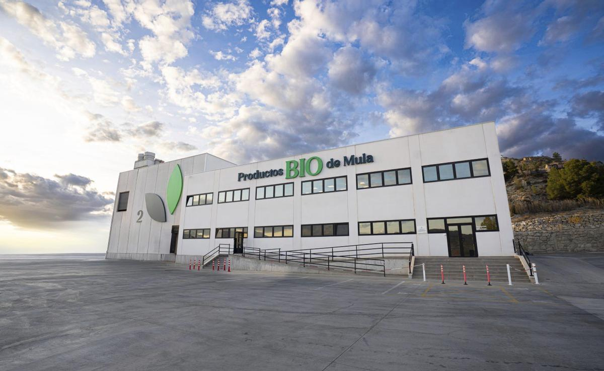

Frucimu cuenta con unas instalaciones diseñadas para garantizar la máxima calidad, conservación y distribución de productos hortofrutícolas. Nuestra nave industrial dispone de amplios espacios de trabajo, zonas de almacenamiento y áreas destinadas a la manipulación y preparación de productos.
Las instalaciones están preparadas para desarrollar cada fase del proceso con eficiencia, organización y cuidado, desde la recepción de la mercancía hasta su preparación para la distribución.
Nuestro objetivo es ofrecer un servicio eficaz, manteniendo siempre el compromiso con la calidad, la seguridad alimentaria y la satisfacción de nuestros clientes.